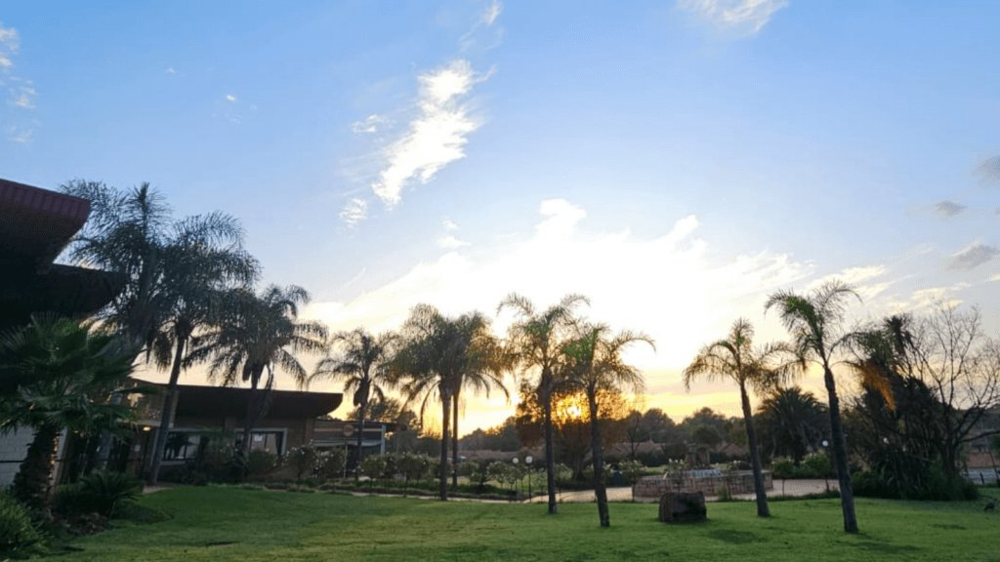
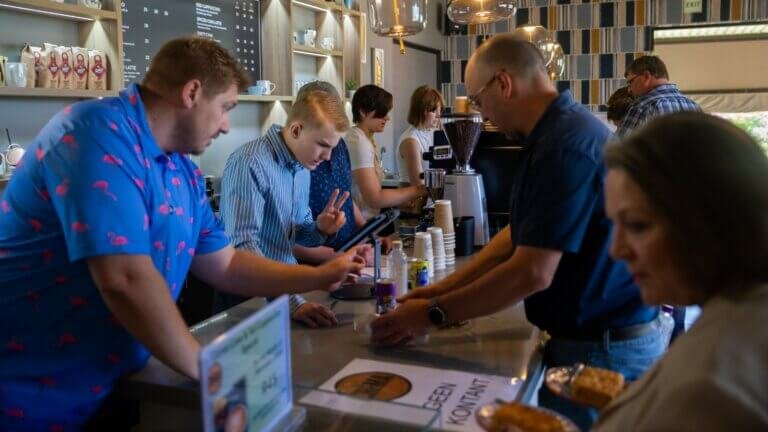
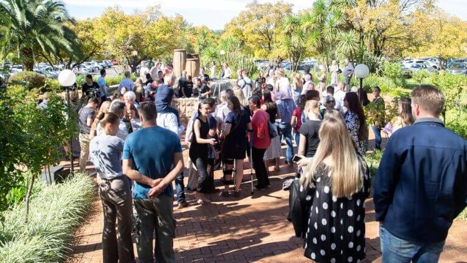

Elarduspark, Pretoria
Welkom by Collage.
’n Moderne Afrikaanse gemeente met die Bybel as fondament.
Kom kuier hierdie Sondag
09:00 Erediens · 11:00 English · 17:00 Aand
- 09:00Erediens, Kinders & Jeug
- 11:00English Service
- 17:00Aand-erediens
’n Tuiste in Elarduspark, gebou vir die hele week.
Van Sondag-eredienste tot berading, mediese sorg en kleingroepe. Collage is meer as ’n Sondag-adres. Ons terrein is deur die week oop vir die gemeenskap wat ons dien.
Lees ons verhaal →Vyf Deure
Hoe Collage die week deur dien
Elke deur hieronder is deur die week oop, nie net Sondae nie.

Koffiewinkel & Gemeenskap
Kuier deur die week by ons koffiewinkel op die terrein. Oop vir almal.
Meer →Berading Sentrum
Professionele berading vir individue, paartjies en gesinne.
Bespreek ’n sessie →Mediese Kliniek
Basiese mediese sorg vir die gemeente en Elarduspark.
Meer →Kleingroepe
Vind ’n groep naby jou, deur die hele Elarduspark.
Meer →Gee & Tiende
Veilig aanlyn, of ondersteun ’n spesifieke bediening.
Meer →
Elke Sondag eindig met mense wat nie wil huis toe gaan nie.
Hierdie Maand
Gebeure en boodskappe
Ondersteun die gemeente
Veilig aanlyn, of by die deur op Sondag.